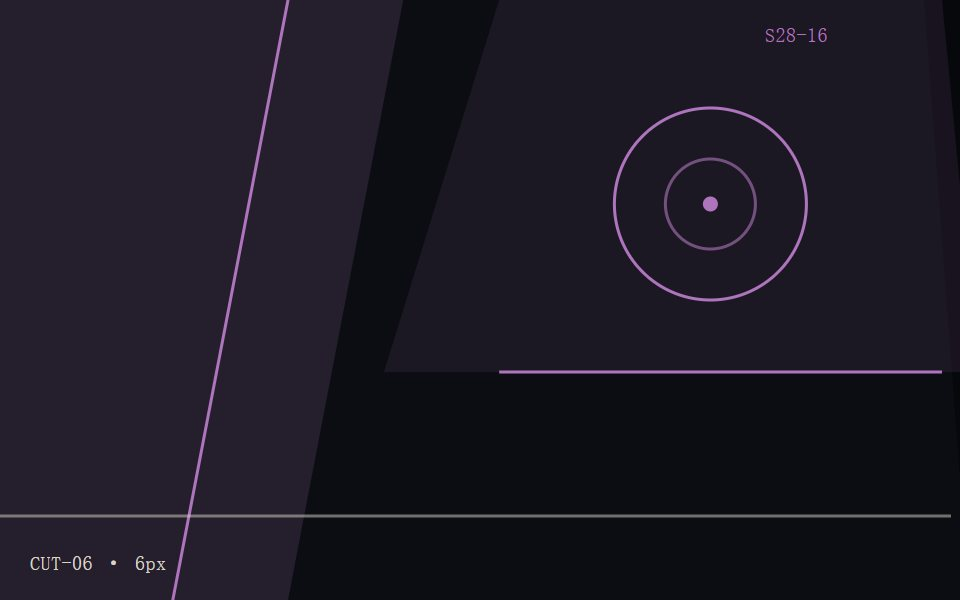
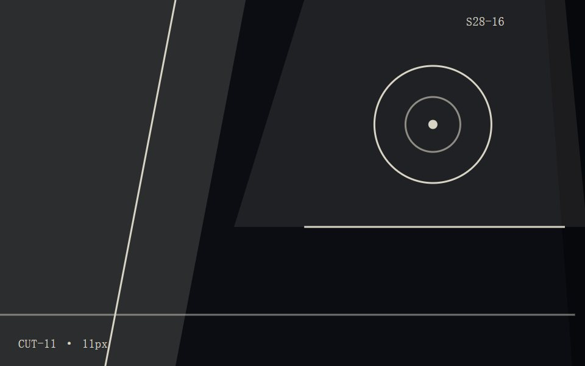
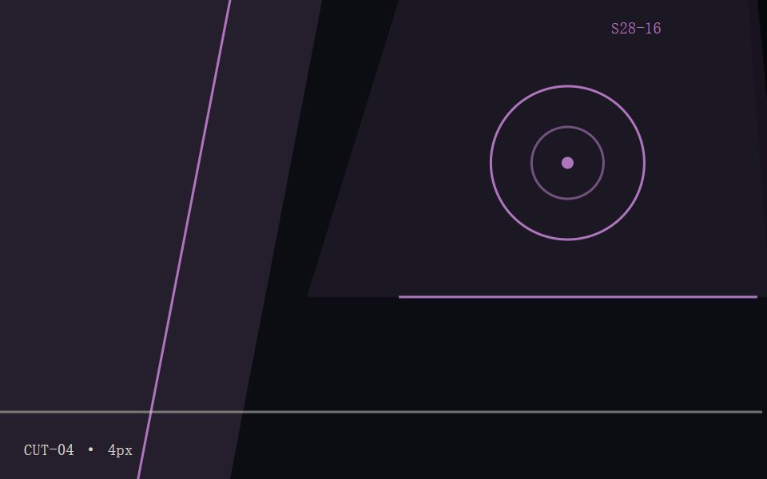
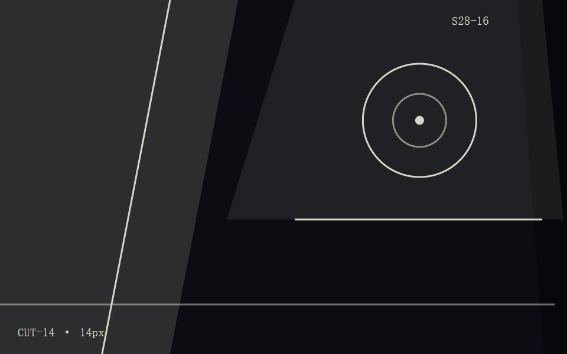
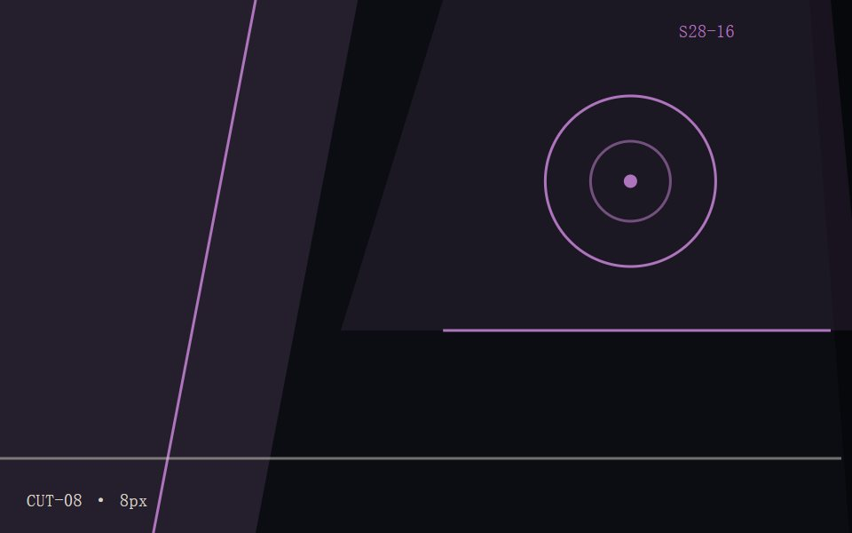
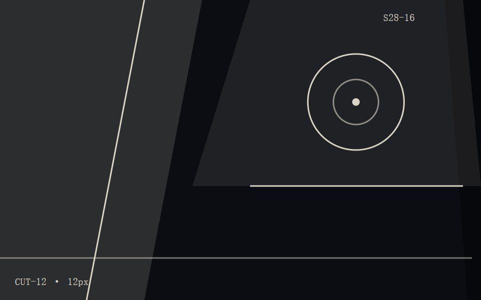

01 · CUT-067 栏
02 · CUT-115 栏
03 · CUT-044 栏
04 · CUT-142 栏
05 · CUT-086 栏
06 · CUT-128 栏曲目与裁切位置对照
CUT MAP · A01–A06 / B01–B06- 封套上缘 · 6 px 裁切3:42CUT-06
- 左下角 · 14 px 错位4:18CUT-14
- 中轴 · 11 px 裁切2:57CUT-11
- 右缘 · 8 px 错位5:03CUT-08
- 内袋 · 4 px 裁切3:21CUT-04
- 封底 · 12 px 错位4:46CUT-12
- 凹版重压 · 5 px6:12CUT-05
- 折痕 · 13 px 错位2:38CUT-13
- 标签圈 · 9 px 裁切3:55CUT-09
- 封套下缘 · 7 px 错位4:09CUT-07
- 压印边 · 10 px 裁切5:31CUT-10
- 内袋反折 · 4 px 错位3:14CUT-04
与 8 号的分界
8 号的层次来自实体厚度与倒角：六块板按层号位移 (24px, 12px)、侧壁拉出 6–10px、上缘 2px 高光。
28 号没有厚度，只有裁切与凹版重压——边界靠错位量与出血量区分，不靠侧壁。
与 2 号的分界
2 号的层次来自中轴镜像与烫金击凸：同一张位图以 2px 中轴做 180° 相位取样，两侧 7 级与 9 级。
28 号不做镜像，只有单侧裁切：12 块的裁切线互不对齐，也没有对称轴。
本方案的凸起规则
凸起只在左上：每块以负向位移投出硬边厚度，blur 为 0。错位量在 4–14px 内逐块写死，出血统一 24px，不存在随机撒图。